Flex是Flexible Box的缩写，意为”弹性布局”，用来为盒状模型提供最大的灵活性。
基本概念
采用Flex布局的元素，称为Flex容器（flex container），简称”容器”。它的所有子元素自动成为容器成员，称为Flex项目（flex item），简称”项目”。
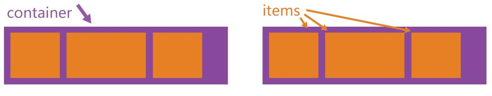
只需给父元素加上如下属性，就可以将父元素指定为flex布局。
容器默认存在两根轴：水平的主轴（main axis）和垂直的交叉轴（cross axis）。主轴的开始位置（与边框的交叉点）叫做main start，结束位置叫做main end；交叉轴的开始位置叫做cross start，结束位置叫做cross end。
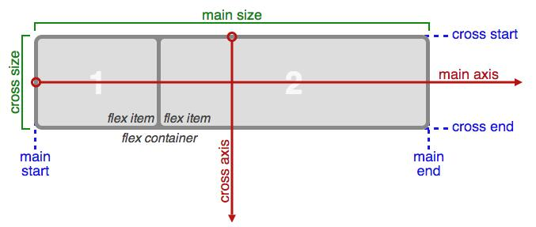
项目默认沿主轴排列。单个项目占据的主轴空间叫做main size，占据的交叉轴空间叫做cross size。
flex container属性
- flex-direction
- flex-wrap
- flex-flow
- justify-content
- align-items
- align-content
flex-direction:
该属性决定主轴的方向（即项目的排列方向）。
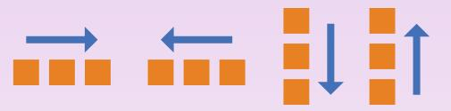
demo
flex-wrap
默认情况下，项目都排在一条线（又称”轴线”）上。flex-wrap属性定义，如果一条轴线排不下，如何换行。
|
|
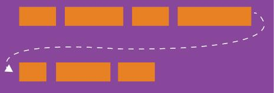
- nowrap （默认），不换行
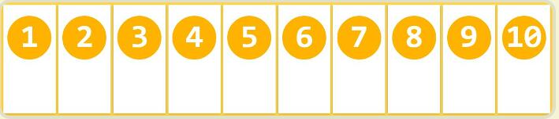- wrap 换行，第一行在上面
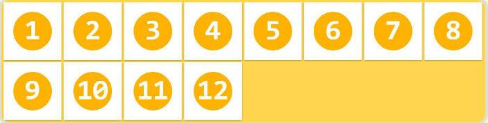- wrap-reverse 换行，第一行在下面
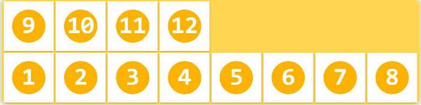
demoflex-flow
该属性是flex-direction属性和flex-wrap属性的简写形式，默认值为row nowrap。
justify-content
该属性定义了项目在主轴上的对齐方式。
- flex-start（默认值）：左对齐
- flex-end：右对齐
- center： 居中
- space-between：两端对齐，项目之间的间隔都相等。
- space-around：每个项目两侧的间隔相等。所以，项目之间的间隔比项目与边框的间隔大一倍。
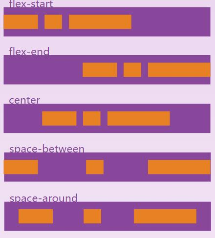
demo
align-items
该属性定义项目在交叉轴上如何对齐。
- flex-start：交叉轴的起点对齐。
- flex-end：交叉轴的终点对齐。
- center：交叉轴的中点对齐。
- baseline: 项目的第一行文字的基线对齐。
stretch（默认值）：如果项目未设置高度或设为auto，将占满整个容器的高度。
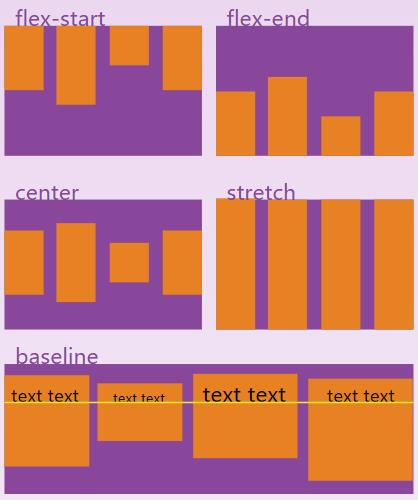
demoalign-content
This aligns a flex container’s lines within when there is extra space in the cross-axis, similar to how justify-content aligns individual items within the main-axis.
Note: this property has no effect when there is only one line of flex items.
flex-start：与交叉轴的起点对齐。
- flex-end：与交叉轴的终点对齐。
- center：与交叉轴的中点对齐。
- space-between：与交叉轴两端对齐，轴线之间的间隔平均分布。
- space-around：每根轴线两侧的间隔都相等。所以，轴线之间的间隔比轴线与边框的间隔大一倍。
- stretch（默认值）：轴线占满整个交叉轴。
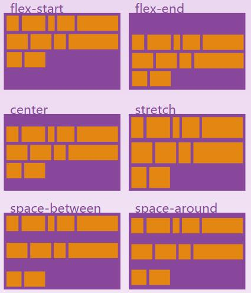
demoflex item属性
- order
- flex-grow
- flex-shrink
- flex-basis
- flex
- align-self
注意，设为Flex布局以后，子元素的float、clear和vertical-align属性将失效。
order
该属性定义项目的排列顺序。数值越小，排列越靠前，默认为0。
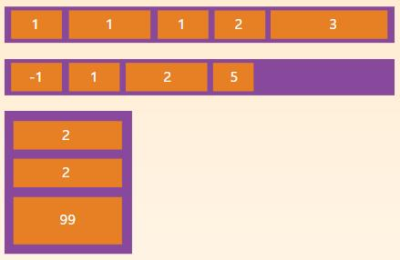
demo
flex-grow
属性定义项目的放大比例，默认为0，即如果存在剩余空间，也不放大。
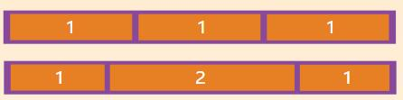
如果所有项目的flex-grow属性都为1，则它们将等分剩余空间（如果有的话）。如果一个项目的flex-grow属性为2，其他项目都为1，则前者占据的剩余空间将比其他项多一倍。
demo
flex-shrink
该属性定义了项目的缩小比例，默认为1，即如果空间不足，该项目将缩小。
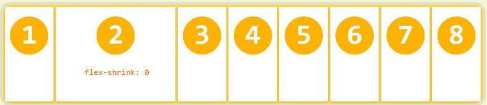
如果所有项目的flex-shrink属性都为1，当空间不足时，都将等比例缩小。如果一个项目的flex-shrink属性为0，其他项目都为1，则空间不足时，前者不缩小。
负值对该属性无效。
demo
flex-basis
该属性定义了在分配多余空间之前，项目占据的主轴空间（main size）。浏览器根据这个属性，计算主轴是否有多余空间。它的默认值为auto，即项目的本来大小。
它可以设为跟width或height属性一样的值（比如350px），则项目将占据固定空间。
初次见flex-basis这个属性，还挺疑惑的，不知道它是用来干嘛的。 后来研究发发现，这个属性值的作用也就是width的替代品。 如果子容器设置了flex-basis或者width，那么在分配空间之前，他们会先跟父容器预约这么多的空间，然后剩下的才是归入到剩余空间，然后父容器再把剩余空间分配给设置了flex-grow的容器。 如果同时设置flex-basis和width，那么width属性会被覆盖，也就是说flex-basis的优先级比width高。有一点需要注意，如果flex-basis和width其中有一个是auto，那么另外一个非auto的属性优先级会更高。
demo
flex
该属性是flex-grow, flex-shrink ,flex-basis的简写，默认值为0 1 auto。后两个属性可选。
该属性有两个快捷值：auto (1 1 auto) 和 none (0 0 auto)。
建议优先使用这个属性，而不是单独写三个分离的属性，因为浏览器会推算相关值。
align-self
该属性允许单个项目有与其他项目不一样的对齐方式，可覆盖align-items属性。默认值为auto，表示继承父元素的align-items属性，如果没有父元素，则等同于stretch。
该属性可能取6个值，除了auto，其他都与align-items属性完全一致。
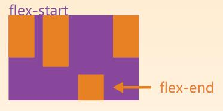
demo
参考文献
深入理解css3中的flex-grow、flex-shrink、flex-basis
Flex 布局教程：语法篇
A Complete Guide to Flexbox
Flex 布局教程：实例篇